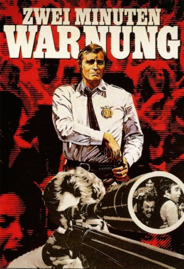

#7170 Zwei Minuten Warnung
Alternativ: Two-Minute Warning
Auszeichnungen: für 1 Oscars nominiert
 
 IMDB-Wertung: 6.1 / 10
IMDB-Wertung: 6.1 / 10  Metascore: 0
Metascore: 0 
Im Stadion von L.A. will ein psychopathischer Killer während eines Footballspiels den US-Präsidenten ermorden. Hinter dem Mordanschlag steckt eine Gruppe Kunsträuber, die mit der Aktion eine Massenpanik auslösen wollen. Da das Museum, das sie ausrauben wollen, in der Nähe des Stadions liegt, hoffen sie, während des Chaos ungestört agieren zu können. Die Polizei erhält einen Hinweis, und der Präsident kann rechtzeitig gewarnt werden – dennoch kommt es zur Katastrophe …
Jahr: 1976
Dauer: 115 Minuten
FSK: 16
Land: USA Studio: Universal PicturesTonspuren:
Untertitel:
Auflösung: 1080p (1920x816) Größe: 8386 MB
Genre: Thriller, Drama
Regisseur: Larry Peerce
Drehbuch: Guy Bonnier
Soundtrack:
Darsteller:
 Charlton Heston als Capt. Peter Holly
Charlton Heston als Capt. Peter Holly John Cassavetes als Sgt. Button
John Cassavetes als Sgt. Button Martin Balsam als Sam McKeever
Martin Balsam als Sam McKeever Beau Bridges als Mike Ramsay
Beau Bridges als Mike Ramsay David Janssen als Steve
David Janssen als Steve- Jack Klugman als Sandman
 Gena Rowlands als Janet
Gena Rowlands als Janet Walter Pidgeon als The Pickpocket
Walter Pidgeon als The Pickpocket Brock Peters als Paul
Brock Peters als Paul- David Groh als Al
 Mitchell Ryan als The Priest
Mitchell Ryan als The Priest- Pamela Bellwood als Peggy Ramsay
 William Bryant als Lt. Calloway
William Bryant als Lt. Calloway Allan Miller als Mr. Green
Allan Miller als Mr. Green- Andy Sidaris als TV Director
- Stewart Steinberg als Portman
- Brad Savage als Ramsay Child
- Buck Young als Baltimore Booster
 J.A. Preston als Policeman
J.A. Preston als Policeman- Cay Forester als Mrs. Ogden
- Robert Ginty als Vendor
 Tommy J. Huff als Cyclist
Tommy J. Huff als Cyclist- Christine Nelson als Woman at Airport
- Hollis Irving als Woman at Airport
 Glenn R. Wilder als Green's Henchman
Glenn R. Wilder als Green's Henchman John Stuart West als Ambulance Attendant
John Stuart West als Ambulance Attendant Tom Bower als The S.W.A.T. Team - Decker
Tom Bower als The S.W.A.T. Team - Decker Carmen Argenziano als The S.W.A.T. Team - Jennings
Carmen Argenziano als The S.W.A.T. Team - Jennings- Larry Manetti als The S.W.A.T. Team - Pratt
 Michael Gregory als The S.W.A.T. Team - Angelo
Michael Gregory als The S.W.A.T. Team - Angelo Harry Northup als The S.W.A.T. Team - Lieber
Harry Northup als The S.W.A.T. Team - Lieber Charles A. Tamburro als Porter, SWAT Team
Charles A. Tamburro als Porter, SWAT Team- 'Wild' Bill Mock als The S.W.A.T. Team - Gilmore
- Gary Combs als The S.W.A.T. Team - Downing
- Frank Gifford als Himself
- Dick Enberg als Himself
- Merv Griffin als Himself - National Anthem Singer
 George DeNormand als Football Game Spectator , uncredited
George DeNormand als Football Game Spectator , uncredited- Randee Lynne Jensen als Extra , uncredited
- Joanna Pettet als (TV version only , uncredited
 Leoda Richards als Football Game Spectator , uncredited
Leoda Richards als Football Game Spectator , uncredited Branscombe Richmond als Bystander with Blood on His Hands , uncredited
Branscombe Richmond als Bystander with Blood on His Hands , uncredited- Gary Sandy als Man selling hats , uncredited
 Cosmo Sardo als Football Game Spectator , uncredited
Cosmo Sardo als Football Game Spectator , uncredited- Marilyn Hassett als Lucy
- Joe Kapp als Charlie Tyler
- Jon Korkes als Jeffrey
- Ron Sheldon als Assistant TV Director
- Stanford Blum als Assistant TV Director
- Vincent Baggetta als Ted Shelley
Datei: X:\1976\Zwei Minuten Warnung (1976, FSK16, 1920x816).mkv seit 02.10.2017
Festplatte: HD 1971-1979
 Es gibt insgesamt 31 Filme in der Gruppe '1976'
Es gibt insgesamt 31 Filme in der Gruppe '1976'